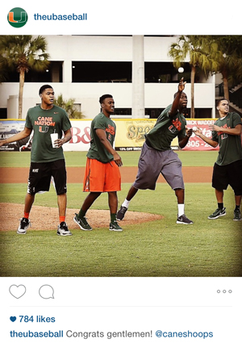

@TheUBaseball
The Task
The external team was looking to launch an account and develop a presence on Instagram for the baseball team. The Assistant Director of Communications tasked me with creating and managing the account.
The Strategy
With many ACC Baseball teams lacking a strong presence on Instagram, I wanted to develop @TheUBaseball into one of the premier baseball accounts in the conference. Content wise, my goal was to provide a behind the scenes tour of the Hurricanes while also providing score updates on game days. I tried to create a voice behind the account that is excited both excited about Canes Baseball and a little bit witty.
In order to grow a follower base, I leveraged the main Miami Hurricanes Instagram account, which had over 70,000 followers when the baseball account started. Also, I worked with the rest of the baseball external staff to get the account mentioned on Facebook, Twitter, press releases and on the ballpark's public address system.
The Work
Exclusive
Taking fans where they can't go.
Trendy
Keeping up with what's hot whether it's the Internet breaking over #TheDress or our basketball team advancing to the NIT Tournament Championship.
Witty
Developing a human voice behind the account.
Informative
I worked with one of our graphics designers to get templates developed for lineup and score graphics.
Excitement
Generating excitement about baseball season.
The Numbers
- 7.4KFollowers
- 8-10%Average Likes Per Followers
- 2ndMost Followed ACC Baseball Team